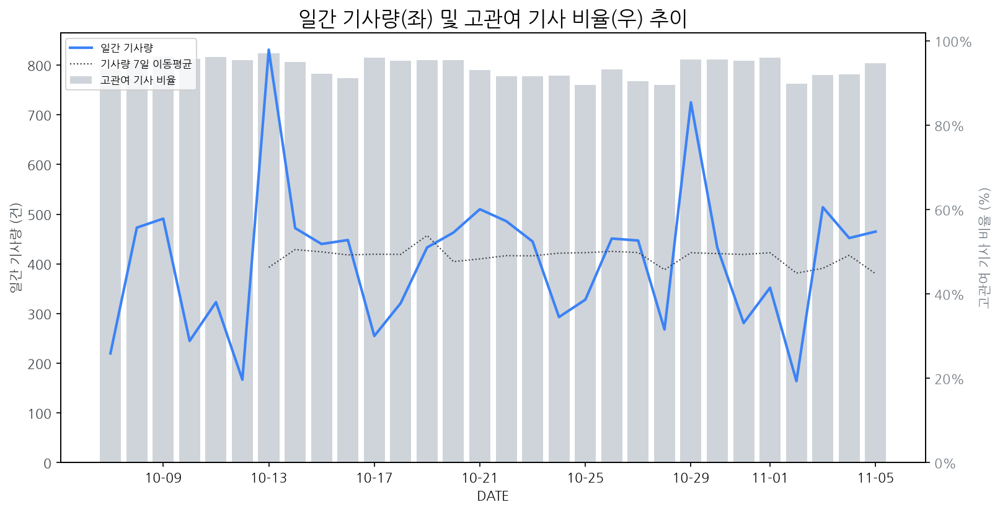

1
시장 활동 지표
기사량 추세 & 이상 징후 탐지
시장의 '전체 기사량'이 평소보다 비정상적으로 급증했는지(Spike)를 차트로 확인하고, LLM이 분석한 급등의 핵심 원인을 파악할 수 있음

고관여 기사란? 산업 연관 키워드로 수집된 기사들 중 디스플레이 키워드에 가중치를 반영하여 도출된 관련성 높은 기사
수집된 기사 수 (2026-11-05)
465
-36% WoW
기사량 변동 수준 (7일 이동평균 대비)
±6.7% 이하
2
오늘의 키워드
급격한 관심 ↑, 주목해야 할 키워드
1
oled
+8.6σ
기술 개발 및 시장 확대 노력으로 OLED 신소재 및 QD-OLED 마케팅이 주목받으며 관련주 급등
Related Metrics
금일 언급량: 55, 전일 대비: +49
Interpretation
OLED 시장 경쟁 심화
Next Step
핵심 토픽 'OLED_Topic' 관련 신호입니다. 3번 섹션(키워드 감성분석)에서 해당 토픽의 감성 변동을 교차 확인하세요.
2
카카오
+5.8σ
카카오의 AI 수익화 및 플랫폼 사업 성장에 대한 증권가 분석이 긍정적 신호로 작용했습니다.
Related Metrics
금일 언급량: 20, 전일 대비: +18
Interpretation
AI 투자 증가 가능성 시사
Next Step
'카카오' 관련 상세 기사 및 경쟁사 반응 모니터링
3
양산
+5.2σ
이녹스첨단소재의 모바일 OLED용 OCA 국산화 초도 양산 돌입 소식이 양산 키워드 급증을 견인했습니다.
Related Metrics
금일 언급량: 19, 전일 대비: +17
Interpretation
국산화 소재 공급 확대 기대
Next Step
'양산' 관련 상세 기사 및 경쟁사 반응 모니터링
4
삼성디스플레이
+4.3σ
삼성디스플레이가 중국 PC방을 중심으로 QD-OLED 체험망을 확대하며 게이밍 시장 공략을 강화한 데 따른 관심 증폭입니다.
Related Metrics
금일 언급량: 25, 전일 대비: +23
Interpretation
게이밍 시장 확대 기회 포착
Next Step
핵심 토픽 'OLED_Topic' 관련 신호입니다. 3번 섹션(키워드 감성분석)에서 해당 토픽의 감성 변동을 교차 확인하세요.
3
실시간 Risk 키워드
경계해야 할 시그널 탐지
특정 토픽의 부정 감성 점수가 급등할 때 이를 즉시 탐지하고, "근거 기사" 링크를 통해 리스크의 실체를 빠르게 파악할 수 있음
!
**애플 듀얼 디스플레이 스마트폰**
하락폭: 0.06
- AI 분석 실패 (ResourceExhausted)
Current Status
오늘 점수: 0.47, 7일 평균: 0.53
Key Evidence Article (Most Negative)
!
Panel_Manufacturer
하락폭: 0.06
- ### 핵심 분석 (HTML
- ...
Current Status
오늘 점수: 0.47, 7일 평균: 0.54
Key Evidence Article (Most Negative)
!
Set_Manufacturer
하락폭: 0.05
- **잠재적 투자 포트폴리오 재조정 및 R&D 우선순위 변경 가능성:** 원자력 추진 선박 및 핵융합 실증 사업 등 대규모 국가 주도 신규 프로젝트와 삼성의 미래기술육성사업 우수 연구자 선정 및 애뉴얼 포럼 개최 소식은, 디스플레이 산업 대비 경쟁력 있는 신규 투자처 혹은 기술 개발 분야의 부상 가능성을 시사합니다. 이는 디스플레이 제조 기업들이 자사의 R&D 투자 방향이나 장기적인 사업 포트폴리오를 재검토하게 만들 수 있으며, 혁신적인 신기술 개발이나 신사업 진출에 대한 압박으로 작용할 수 있습니다.
- **인력 및 자원 유출 경쟁 심화 우려:** 충남 아산에 대규모 디스플레이 국가연구플랫폼 구축 사업이 예비타당성 조사를 통과하고 청신호를 받은 것은 긍정적인 신호이나, 이는 동시에 관련 분야의 우수 인력 및 기술 자원에 대한 경쟁을 심화시킬 수 있습니다. 특히, 정부 주도 대형 사업들은 민간 기업의 인력 유출을 유발하거나, 기업이 필요로 하는 핵심 연구 인력 확보에 어려움을 야기할 수 있으며, 이는 디스플레이 제조 기업의 경쟁력 유지에 부정적인 영향을 미칠 수 있습니다.
Current Status
오늘 점수: 0.47, 7일 평균: 0.53
Key Evidence Article (Most Negative)
!
Automotive_Display_Topic
하락폭: 0.04
- '반도체 대형주 급락에 소부장株 '와르르'...' 영향: 관련 기사에서 언급된 반도체 대형주 및 소부장(소재·부품·장비) 주가의 동반 급락은 디스플레이 제조 기업의 투자 심리 위축 및 공급망 불안정 가능성을 시사합니다. 특히, 반도체 공정 기술과 디스플레이 제조 기술 간의 연관성을 고려할 때, 반도체 산업의 부정적인 흐름은 디스플레이 부품 수급이나 신규 투자 결정에 영향을 미쳐 감성 점수 하락에 기여했을 수 있습니다.
- '이녹스첨단소재, 자체 개발 OCA로 플래그십 스마트폰 뚫었다' 기사의 함의: 해당 기사는 특정 소재 기업의 성공 사례를 보여주지만, 동시에 플래그십 스마트폰 시장 경쟁 심화를 반영합니다. 이러한 경쟁은 신규 디스플레이 기술 도입 또는 기존 기술 업그레이드에 대한 압박으로 작용할 수 있으며, 디스플레이 제조 기업 입장에서 R&D 투자 확대 및 원가 절감 노력을 가속화해야 하는 과제를 제시합니다. 시장의 높은 기대치에 부응하지 못할 경우, 감성 점수 하락으로 이어질 수 있습니다.
Current Status
오늘 점수: 0.47, 7일 평균: 0.51
Key Evidence Article (Most Negative)
!
AI 기반 OLED 게이밍 디스플레이 반도체
하락폭: 0.04
- 기술 발전 지연 및 시장 경쟁 심화 우려: 경상국립대의 청색 OLED 발광 소재 수명 연장 기술 개발은 긍정적이나, 경쟁사(삼성디스플레이)의 QD-OLED 체험 확대 및 중국 시장 공략 움직임과 비교했을 때, AI 기반 OLED 게이밍 디스플레이 반도체 분야의 핵심 기술 발전 속도가 시장 기대치를 따라가지 못하거나, 경쟁사 대비 차별화된 기술 우위를 확보하지 못하고 있다는 시장의 우려가 감성 점수 하락의 주요 원인으로 작용했을 가능성이 있습니다. 특히, 영우디에스피의 실적과 기업 가치 평가 괴리에 대한 언급은, 관련 소재 및 부품 산업 전반에 대한 투자 심리 위축 가능성을 시사합니다.
- 기대 대비 낮은 사업 성과 및 시장 확대 난항 예상: 삼성디스플레이의 중국 PC방 QD-OLED 체험 확대 및 파트너십 구축은 긍정적인 시장 확대 노력으로 보이지만, AI 기반 OLED 게이밍 디스플레이 반도체 채택 확대 및 실질적인 매출 증대로 이어지는 과정에서 예상보다 더딘 속도나 기술적 난제를 겪고 있다는 인식이 감성 점수 하락을 야기했을 수 있습니다. AI 기술이 접목된 고성능 게이밍 디스플레이 반도체가 실제 게이밍 경험 향상에 미치는 파급력이 기대만큼 크지 않거나, 도입 비용 대비 효용성에 대한 시장의 의구심이 제기될 가능성도 있습니다.
Current Status
오늘 점수: 0.47, 7일 평균: 0.52
Key Evidence Article (Most Negative)
!
Foldable_Display_Topic
하락폭: 0.03
- 원인: QD-OLED 기술의 특정 시장(중국 PC방/인터넷 카페) 집중 공략 및 홍보 활동에 대한 시장의 피로감 혹은 과도한 기대치 충족 실패 가능성. 관련 기사들이 QD-OLED의 중국 PC방 시장 공략에 집중되어 있어, 폴더블 디스플레이와 직접적인 기술 연관성이나 시장 확장성 측면에서 기대만큼의 긍정적인 반응을 얻지 못했을 수 있습니다.
- 영향: QD-OLED의 초기 시장 확대 전략이 예상보다 더딘 속도를 보이거나, 폴더블 디스플레이와 같은 차세대 기술에 대한 투자 및 연구개발 우선순위에 대한 의구심을 야기할 수 있습니다. 이는 단기적으로는 폴더블 디스플레이 사업부의 투자 유치나 시장 내에서의 혁신적인 이미지 구축에 부정적인 영향을 미칠 수 있습니다.
Current Status
오늘 점수: 0.47, 7일 평균: 0.50
Key Evidence Article (Most Negative)
!
TV_Display_Topic
하락폭: 0.03
- 할인 경쟁 심화 및 수요 둔화 우려: 롯데하이마트의 연중 최대 할인 행사인 '블프'와 '그랜드십일절' 등 대규모 할인 프로모션이 진행되며, TV 및 디스플레이 제품군의 가격 경쟁이 심화될 것으로 예상됩니다. 이는 디스플레이 제조 기업의 수익성 악화로 이어질 수 있으며, 더불어 가전 수요 둔화 신호로 해석될 수 있어 감성 점수 하락의 주요 원인으로 작용했을 가능성이 높습니다.
- 신규 시장 진출 및 협력 확대의 불확실성: 삼성디스플레이의 중국 PC방 체험망 확대와 같은 신규 시장 진출 및 협력 사례는 긍정적일 수 있으나, 현재의 할인 경쟁 및 전반적인 시장 상황을 감안할 때 실제 성과로 이어지기까지는 불확실성이 존재합니다. 이러한 신규 시장 개척 노력의 잠재적 성과에 대한 시장의 기대치가 하락하며 감성 점수 급락에 영향을 미쳤을 수 있습니다.
Current Status
오늘 점수: 0.47, 7일 평균: 0.50
Key Evidence Article (Most Negative)
4
주요 이벤트 모니터링
실시간 산업 동향 파악을 위한 주요 활동
최근 발생한 주요 기업들의 신제품 출시, 투자 등 주요 이벤트를 제공하여 매일 경쟁사 동향을 확인할 수 있음
모토로라는 1만2000니트의 초고휘도와 2억 화소 망원 카메라를 탑재한 텐덤 AMOLED 디스플레이를 장착한 신제품을 출시했습니다. 이는 모바일 디스플레이의 밝기 및 화소 경쟁을 더욱 심화시킬 것으로 예상됩니다.
Impact
이번 모토로라의 신제품 출시는 모바일 디스플레이 시장에서 초고휘도 및 고화소 기술 경쟁을 촉발하며, 차세대 디스플레이 패널 개발 및 생산에 대한 투자를 가속화할 것으로 전망됩니다.
Next Step
모바일 디스플레이 제조 기업은 텐덤 AMOLED 기술의 가능성을 탐색하고, 초고휘도 구현을 위한 소재 및 공정 기술 개발에 집중하여 차별화된 제품 경쟁력을 확보해야 합니다.
베트남 모니터 시장은 꾸준한 성장세를 보이며 주요 사업자들의 주목을 받고 있습니다. 이 시장은 향후에도 높은 성장 잠재력을 지닐 것으로 예상됩니다.
Impact
베트남 모니터 시장의 성장세는 관련 부품 공급망 및 제조사들의 생산 및 판매 전략에 긍정적인 영향을 미칠 수 있으나, 동시에 경쟁 심화로 이어질 가능성도 있습니다.
Next Step
베트남 시장의 현지 수요 및 경쟁 구도를 면밀히 분석하고, 현지 파트너십 구축 또는 차별화된 제품 전략을 통해 시장 점유율 확보를 고려해야 합니다.
애플이 첫 OLED 맥북을 출시하며 차세대 OLED 시장이 주목받고 있습니다. 이에 따라 관련 업계에서는 발빠른 대응을 모색하고 있습니다.
Impact
이번 맥북의 OLED 탑재는 IT 기기 전반으로 OLED 채택을 확대시키며 관련 시장 성장을 견인하고, 기술 개발 및 생산 경쟁을 심화시킬 것입니다.
Next Step
OLED 기술 리더십 확보 및 신규 수요에 대응할 수 있는 생산 능력 확대를 위한 투자를 적극 검토해야 합니다.
이마트가 '쓱데이' 마지막 주말을 맞아 대규모 할인 행사를 진행한다. 이 행사는 TV, 스마트폰 등 디스플레이가 탑재된 제품들의 판매량 증진을 목표로 한다.
Impact
이번 행사는 고가 디스플레이 제품의 소비자 구매 문턱을 낮추어 단기적인 디스플레이 패널 수요를 견인할 가능성이 있다.
Next Step
디스플레이 제조 기업은 이마트의 프로모션과 연계하여 해당 제품군의 재고 관리 및 생산 계획을 최적화해야 한다.